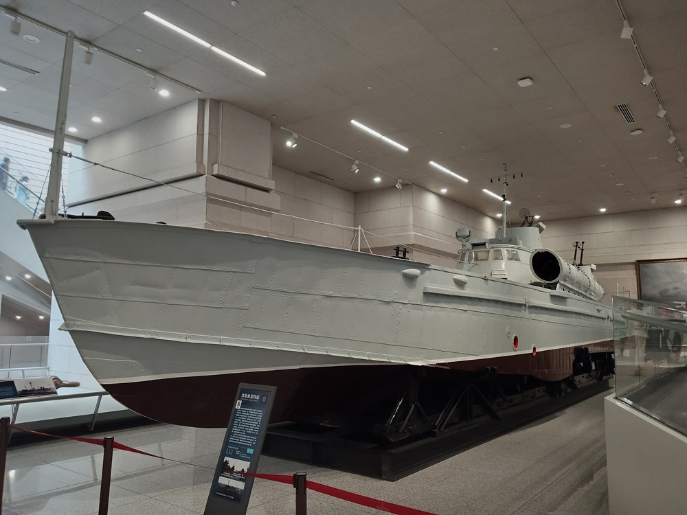
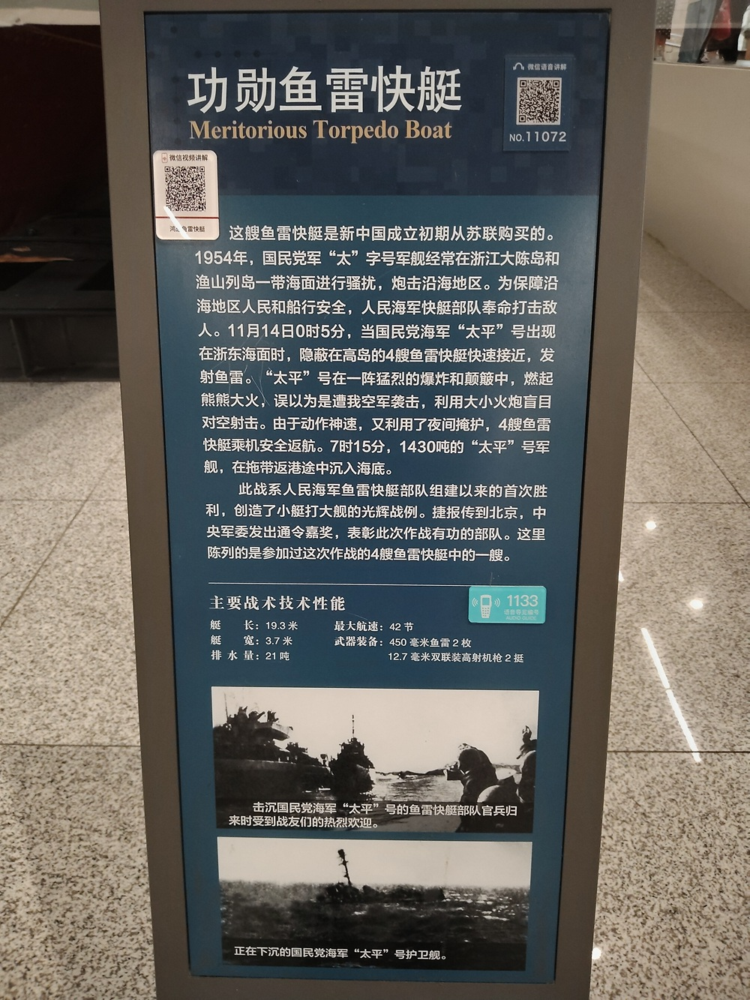

功勋鱼雷快艇

这艘鱼雷快艇是新中国成立初期从苏联购买的。1954年，国民党军“太”字号军舰经常在浙江大陈岛和渔山列岛一带海面进行骚扰，炮击沿海地区。为保障沿海地区人民和船行安全，人民海军快艇部队奉命打击敌人。11月14日0时5分，当国民党海军“太平”号出现在浙东海面时，隐蔽在高岛的4艘鱼雷快艇快速接近，发射鱼雷。“太平”号在一阵猛烈的爆炸和颠簸中，燃起熊熊大火，误以为是遭我空军袭击，利用大小火炮盲目对空射击。由于动作神速，又利用了夜间掩护，4艘鱼雷快艇乘机安全返航。7时15分，1430吨的“太平”号军舰，在拖带返航途中沉入海底。
此战是人民海军鱼雷快艇部队组建以来的首次胜利，创造了小艇打大舰的光辉战例。捷报传到北京，中央军委发出通令嘉奖，表彰此次作战有功的部队。这里陈列的参加过这次作战的4艘鱼雷快艇中的一艘。
主要战术技术性能：
- 艇长：19.3米
- 艇宽：3.7米
- 最大航速：42节
- 排水量：21吨
- 武器装备：450毫米鱼雷2枚，12.7毫米双联装高射机枪2挺

1954年，人民海军出动4艘排水量仅21吨的鱼雷快艇，于11月14日凌晨出击，击沉了国民党海军1430吨的主力战舰太平号。这一战，是年轻的鱼雷快艇部队在实战中获得的首个战果，创造了小艇打大舰的光辉战例，是我军在收复浙东列岛，争夺制海权中的关键一战，中央军委予以通令嘉奖。军博收藏的158艇，就是直接击沉太平号的鱼雷快艇。
太平号
太平号是国民党海军的主力战舰，原为美国海军的德克尔号，建造于费城海军船坞，1943年服役。美国依据二战租借法案，提供给蒋介石政府的海军使用，旨在提升中国军队在抗日战争中的作战能力，以更有效地对抗日本侵略者。但是，舰员在美国接受培训后，回国时已经是1946年，并没有赶上抗日战争。
太平舰最初为人所知，是在海军名将林遵的指挥下，参加了1946年收复南海诸岛的行动。为了纪念太平舰，南沙群岛中最大的岛屿被更名为太平岛。
1953年后，国民党军残部以大陈岛为依托，经常向温州湾、三门湾一带海域袭扰，并经常在夜间派出舰艇在大陈岛与渔山岛、大陈岛与一江山岛之间游弋。太平舰在浙江海域的活动，严重干扰了当地渔民的日常作业、商业贸易，以及海上运输的正常运行。
奉命出击
1954年10月25日，华东军区海军负责人张爱萍下令对太平号发起进攻，给国民党海军予以重创，以夺取大陈列岛附近海域的制海权，为日后登陆大陈列岛提供保障。
之所以选择太平号，基于以下几个关键因素：
- 太平号的巡逻路径是固定的，必须严格遵守预定航线，无法随意调整。航线途经多个岛屿，能够提供理想的伏击环境。
- 太平号的作战能力，主要集中在反潜和防空方面，对舰攻击能力较弱，难以有效应对鱼雷艇的快速突袭。
- 人民空军已经夺取了浙东沿海的制空权，太平号只能在夜间巡逻，有夜袭良机。
部署在北方海港的鱼雷快艇部队，如果从海上南下驰援浙东沿海，必然被国民党军队侦察到。于是，解放军采取了瞒天过海的策略，从青岛通过铁路运输，将鱼雷快艇第31大队1中队的6艘鱼雷快艇，隐蔽调派到浙东沿海前线。
1954年10月31日夜，国民党海军雷达兵，在荧光屏上发现了6个小亮点。只见6个小亮点围着高岛锚地海域绕了一圈，便全都按原路返回了。根据经验判定，这是一支解放军护卫舰编队的例行巡航。岂不知，每艘护卫舰的舷侧都拖带着一艘鱼雷艇。由于护卫舰体积大大超过鱼雷艇，而且编队航向正好垂直于对方的观测站，因此对方雷达只能发现一个小白点，并错误地认为只是一艘护卫舰。利用高岛地形的遮蔽，在围着高岛转圈时，护卫舰编队迅速放下将一艘艘鱼雷艇。鱼雷艇隐蔽在高岛，埋伏下来，护卫舰继续前进。在敌人的雷达看来，所有舰只全部返回了基地。就这样，6艘鱼雷快艇，出乎意料的在敌人的鼻子尖下，埋伏了起来。
海战装备
高岛观察通信站，是利用从原来国民党海军舰艇上拆下的一台SO-8舰用对海雷达架设的。雷达布局充分利用制高点优势，显著提升了探测范围和精度，实现对周边海域的有效监控。
敌人差不多每天晚上，都要用舰炮轰击我雷达天线，因为在白天怕我空军轰炸。雷达天线，安装在靠近山顶。敌人的炮打低了，炮弹不是在滩头爆炸，就是在山坡上爆炸。打高了，炮弹又飞到山后面去了。
第31大队1中队的6艘鱼雷快艇，是我国从苏联获得的P-4型高速鱼雷艇（123艇）。P-4型鱼雷艇是苏联提供给我们的旧艇，铝制艇体，排水量21吨，性能并不十分突出。但依然是人民海军第一型进攻型武器，配合人民海军刺刀见红的战斗作风，也可以说是如虎添翼。
夜袭太平号
1954年11月1日，第31大队1中队抵达当晚，雷达即发现目标，但敌舰提前返航，攻击未果。12日下午1时左右，3分队由于没有注意到潮汐变化，2艘快艇搁浅，螺旋桨受损，不得不拖回定海修理。当日2分队抵达高岛接替3分队。13日晚，雷达又发现目标，鱼雷快艇当即出击，但很快海上气象变坏，鱼雷快艇不得不返航。按计划，15日鱼雷快艇部队必须返回舟山，因为大风浪季节即将来临。机会就在14日凌晨来到了。
11月14日0时5分，高岛观察通信站发现目标，指挥所判明是国民党海军太字号军舰。第31大队1中队4艘鱼雷快艇进入一级战备。0时52分，1中队开始接敌。1时26分，155艇发现右前方灯光一闪，快艇向闪光方向加速前进。
1时28分，1中队确认目标为太平号。海上指挥部在155艇上，立即向岸上指挥部报告，并通报各艇组成左梯队接敌，以155、156艇主攻，157、158艇牵制。这一战术并没有奏效。155艇为了避免妨碍其他艇的动作，向右转向避让，156艇则为取得一定的提前角向左转。这样，主攻两艇的距离迅速拉大，负责牵制的157和158艇则插入其间，形成了一个松散的单横阵。
约在1时30分左右，太平号上的雷达发现4个快速目标。用望远镜搜索，看见少许白浪花，表示鱼雷艇正在加速。太平号上的警戒火炮，开始追瞄第31大队1中队的鱼雷艇。
1时35分30秒，155艇发射2条鱼雷，并释放烟幕、打开消音器，以35节航速撤出战斗。157艇于1时36分20秒，发射2条鱼雷，同时也释放烟幕，高速撤离战斗。156艇于1时36分40秒，发射2条鱼雷。此时，太平号开始射击，发射曳光弹。
158艇打开消音器，采取35节高速向敌冲击，大胆接近至几百米，于1时37分发射2条鱼雷。太平号以火炮向我鱼雷艇射击，当我艇转向后，发现鱼雷命中敌舰，海面上掀起了巨大的水柱和黑烟。右舷舰首被撕开一个一米见方的大洞，海水开始大量涌入，主机受损，完全丧失了机动能力。7时42分，太平号在高岛东南18海里处沉入大海。
历史的背影
随着太平号被击沉，国民党海军再也不敢派出舰艇进入大陈列岛附近海域，从而为解放大陈列岛的一江山岛战役扫清了障碍。太平号成为世界战争史上第一艘被鱼雷快艇击沉的主力舰只。
太平号充满了遗憾，本可以作为收复南沙群岛的功臣留在历史中。最后，却作为新中国海军鱼雷快艇部队的首个战果，被永远地定格在历史之中。
人民海军鱼雷艇部队，行动隐蔽、迅速，鱼雷发射准确，一举击沉太平号，创造了海军鱼雷艇部队首次成功的战例。
当然，作为一支年轻的队伍，也有一些需要总结的经验教训：
- 在高岛隐蔽待机时，对当地海浪潮汐的规律了解不足，导致隐蔽的6艘鱼雷快艇之中有2艘搁浅。当战机出现时，只能有4艘鱼雷快艇出击，减少了进攻的力量。
- 攻击得手，撤离战场的时候，机械照搬苏军作战条例。释放烟幕，反而在夜间暴露了目标，遭到了对手的炮击。
在今天，鱼雷艇已经成为边缘化的海战武器，被具有更高作战效率的导弹艇和高速潜艇所替代。
回顾历史，依然能让我们看到，百年来历代海军军人，努力为国家建设海防的身姿。